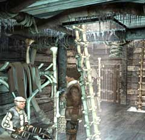

| 概要 | 地図 |
| 淡いヒント集 | ヒント集 | 的確なヒント集 |
| 攻略最短ルート |
| 場所選択に戻る |
氷山
| タルを動かし、扉を開ける  ハンスの横にあるハシゴを上る 「象牙のフック」を入手  タルを上り、帆の下を調べる 帆の柱に対し「象牙のフック」を使う たれているロープをクリック 下に降りて、レバーを引く | << 前へ | |
| 場所選択に戻る |
| 概要 | 地図 |
| 淡いヒント集 | ヒント集 | 的確なヒント集 |
| 攻略最短ルート |
Syberia II
| 目次へ戻る | ページの上部へ |